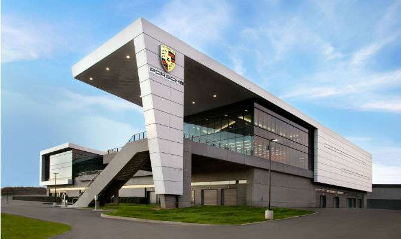
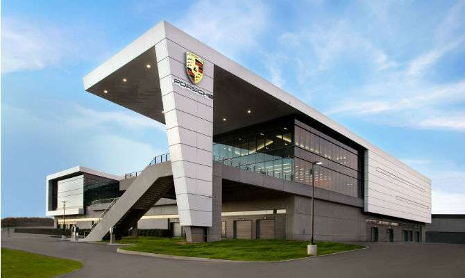

Produções e Vendas
Inicio
Criador
Historia
Modelos
 

A sede e a fábrica principal estão localizadas em Zuffenhausen, uma área de Stuttgart, mas os modelos Cayenne e Panamera são fabricados em Leipzig, Alemanha, e partes para o SUV também são assembladas na fábrica do Volkswagen Touareg em Bratislava, Eslováquia. A produção dos modelos Boxster e Cayman foi produzida externamente na fábrica da Valmet Automotive na Finlândia de 1997 a 2011, e em 2012 a produção regressou à Alemanha.